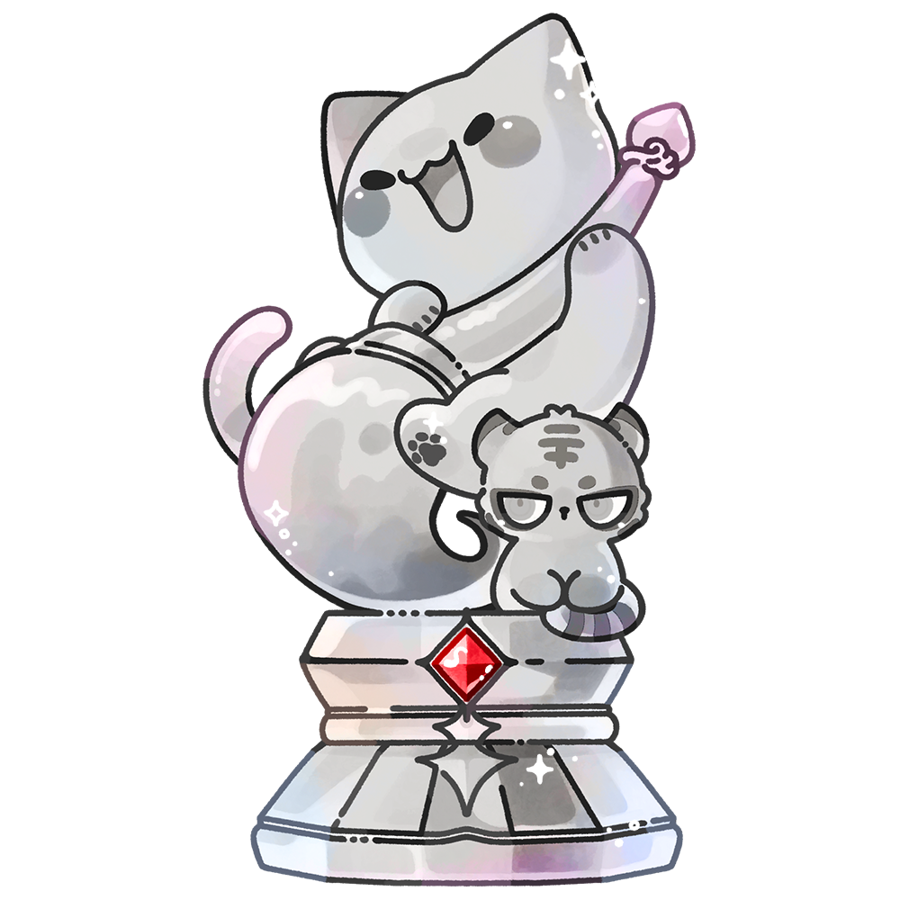
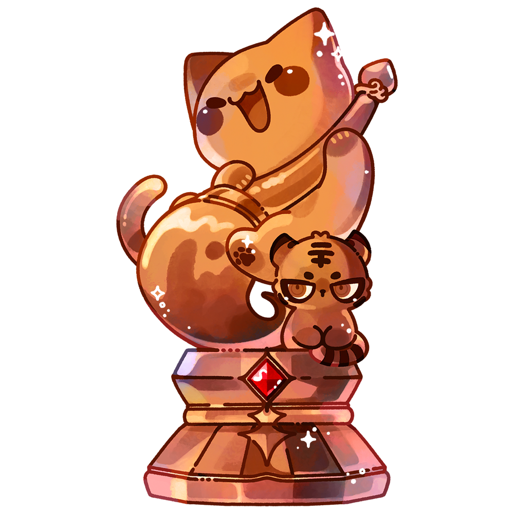
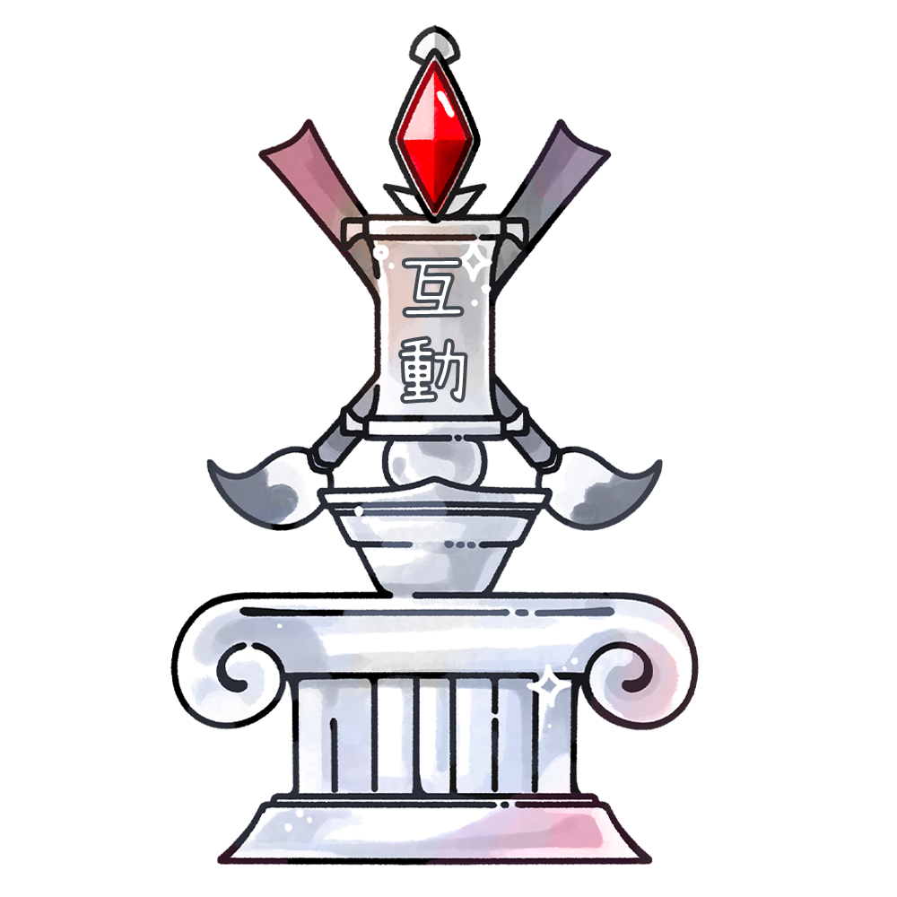
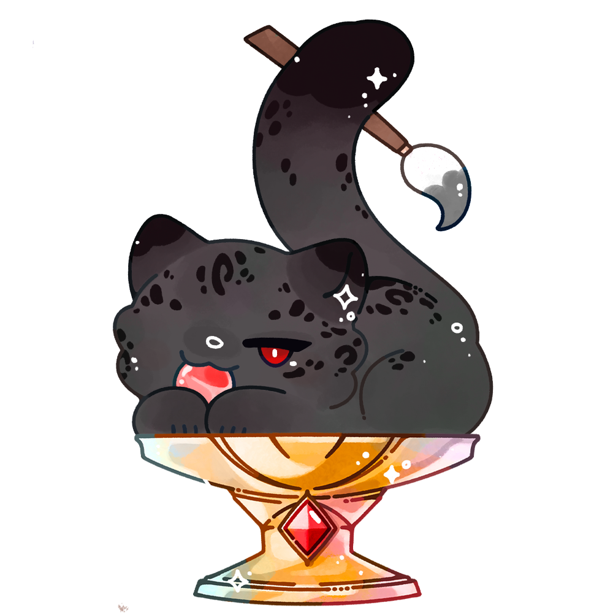
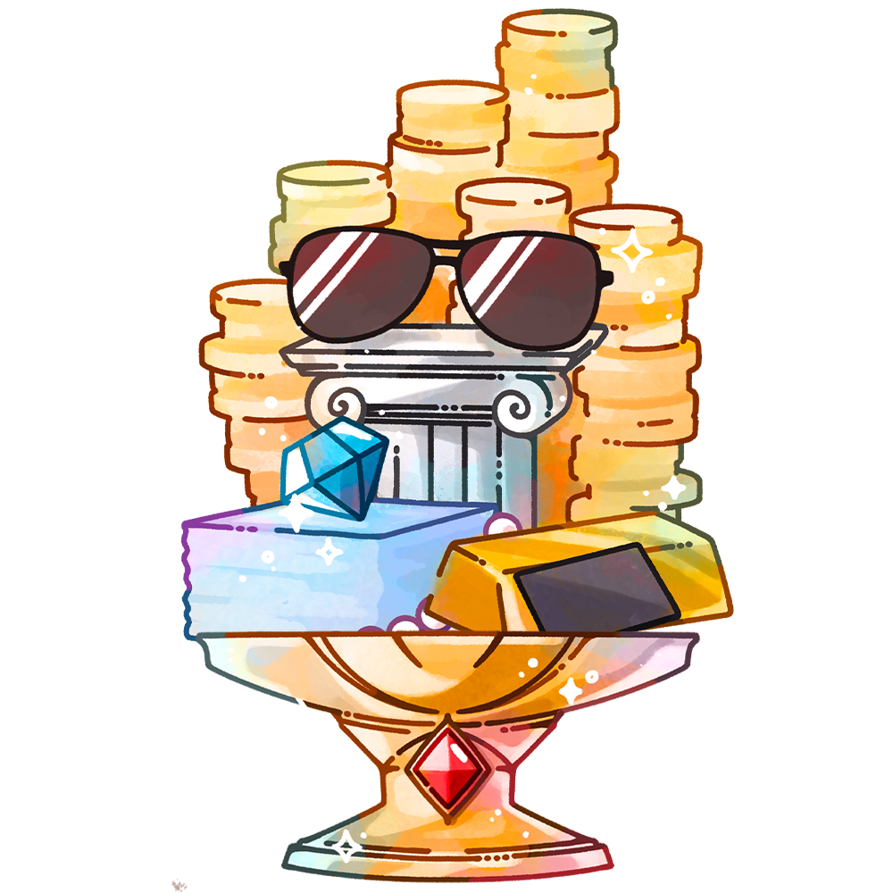
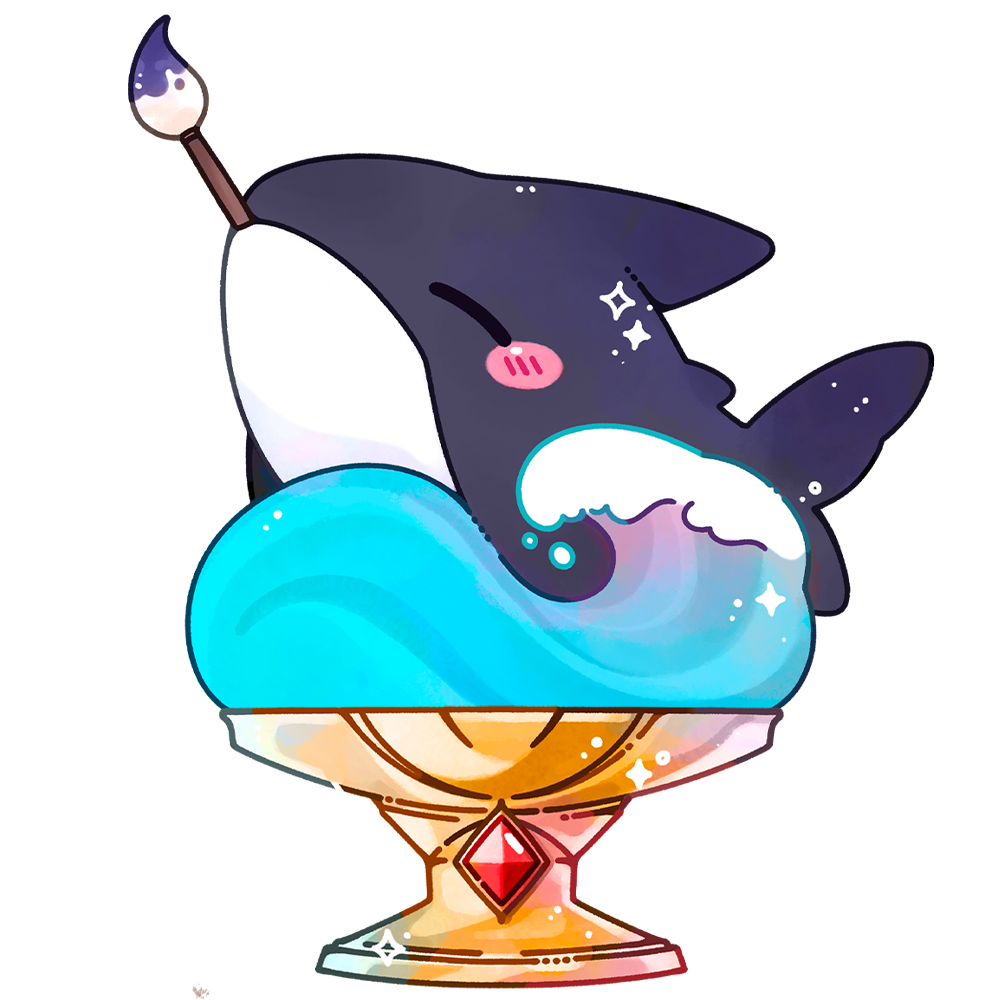
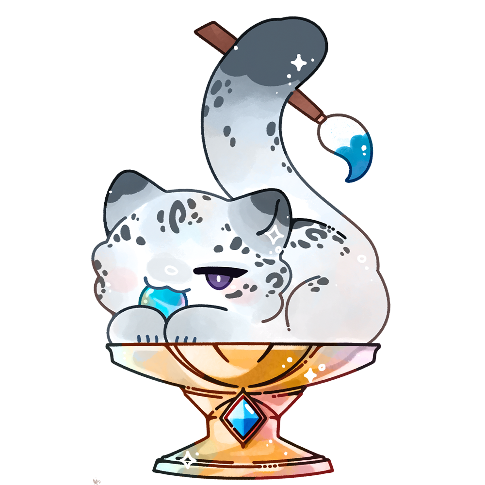
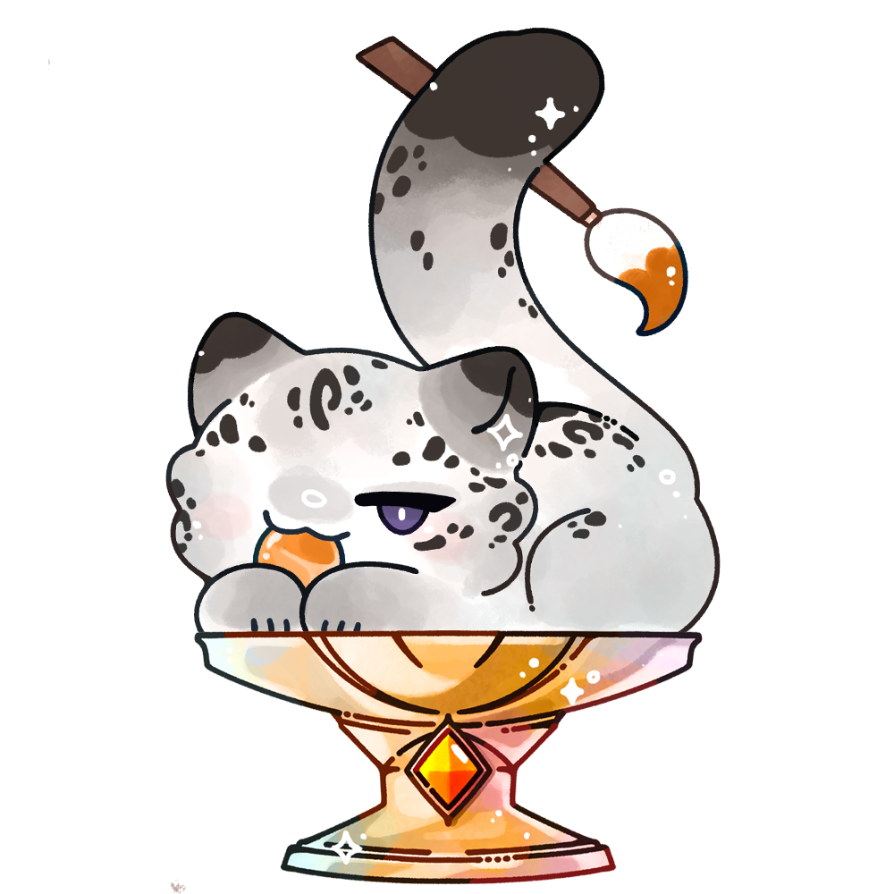

CREATOR SUPPORT PROJECT · 2026
貓祭不繪讓你俄史計劃
繪俄史，會餓死，畫畫就真的得餓死嗎？同是創作者，貓祭想支援仍然拿著筆、為作品熬夜，也會為自己的進步雀躍的你。
繪俄史藝術高等學院 × 貓祭 NekoMatsuri活動主題
- 須以《繪俄史藝術高等學院－三年 C 班》以下六位人物：貓祭、祭煜、沈曦、沈澈、沈樂、沈月，擇一或複數角色創作即可；人物設定請參考提供之素材。
- 創作內容中可以有其他老師、學生等，但不列入評分判定。
- 繪圖主題以「繪俄史藝術高等學院」為主，不相關題材將不會予以參賽資格。
- 本次繪畫可添加服飾、配件、髮型等，形式不拘。
- 內容不得違反善良風俗，禁止血腥、暴力、R18 色情等題材，不得涉及重製、改作、描圖、抄襲、仿冒、使用 AI 繪製或其他侵害他人權益之情事。
- 禁止使用非本人繪製（若取得雙方同意代發比賽，則不在此限）及未授權之圖片素材於投稿作品中；若發現違規情形，將取消參賽資格。
活動規則
- 繪圖尺寸不小於 A4、解析度 150 dpi，直橫式皆可；表現手法不限，插畫、漫畫、動畫等皆可，黑白或彩色不拘。
- 作品上傳須使用 PNG、JPG、GIF 或 MP4 格式。
- 每張作品僅會獲得一個獎項，不會重複得獎。
- 參賽者包括但不限於學院之老師、學生等。
- 所有參賽作品皆可能由主辦方選中、編輯後用於 X（原 Twitter）及其他宣傳。參賽者授權主辦單位以「非直接銷售」為目的使用作品，如社群宣傳、新聞稿件、封面圖等；除本活動獎金外，不另支付版稅及其他費用。主辦單位使用作品時，須明確標示創作者，以達互利共榮之效。
- 未經原著作人同意，主辦方不得將得獎作品用於任何直接營利行為，亦不得製作為禮贈品。
- 活動期間，參賽者可為自己的作品宣傳或直播，也可將作品發布至個人社群平台。
- 為保障所有參加者之權利，主辦方不強制要求繪製縮時錄影；如作品有疑慮，參賽者須提供自行創作證明供主辦方審查。若發生前述情形且無法提交證明，參賽者應自負一切法律責任；主辦單位有權立即取消其參賽或獲獎資格，並追回全數獎金。
- 繪圖作品必須為活動開始前未曾上傳至任何社群平台之作品；活動開始後，須於 X（原 Twitter）貼文加上指定 Tag，並將作品上傳至指定雲端。
評審陣容
共同評選
金獎、銀獎、銅獎、互動獎、卡哇獎、搞怪獎
獎項一覽
每張作品只會獲得一個獎項；每張便條紙都標示了負責評審。
共同評選獎項



角色獎項

 負責評審：貓祭＆阿姬
負責評審：貓祭＆阿姬



